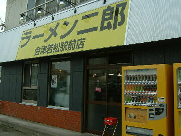
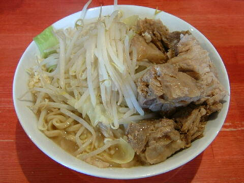
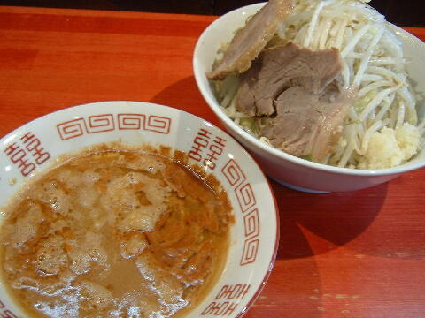

会津若松市 駅前町 6-31
月・第３日・祝（不定休）
11：00〜14：00 17：00〜21：00
土・日・祝 11：00〜15：00

小ラーメン 750円、小ラーメン豚入り 900円
大ラーメン 850円、大ラーメン豚入り 1000円
ミニラーメン（麺少なめ、豚１枚、ニンニクの有無のみ） 700円
プチラーメン（麺半分、豚１枚、ニンニクの有無のみ） 650円
小つけ麺エビ味 900円、小つけ麺エビ味豚入り 1050円
大つけ麺エビ味 1000円、大つけ麺エビ味豚入り 1150円
しょうが 50円、生たまご 50円、魚粉 100円、ねぎ 100円
店員は、主に多摩で修行した店主と助手２名の３人体制。
黒白コショウ（ギャバン）、一味唐辛子、醤油ダレ。
レンゲ有。紙ナプキン。名刺無。
BGMは、J-POP。
トッピングは、二郎基準。
ラーメン二郎 会津若松店 会津若松店のTwitter
「ラーメン二郎 会津」でヤフー検索
「ラーメン二郎 会津」でヤフーリアルタイム検索
「ラーメン二郎 会津」でグーグル検索

小ラーメン豚入り ニンニク
麺は、平太ストレート麺で小麦がミッチリ詰まった感じのプッチとしたあんべだべ。
ぶたは、ずねぇくてやっこい豚がみっちらだなし。
スープは、乳化傾向にこせられているのでかまかして食ってくんつぇ。後味はさっぱりだべし。
ヤサイは、モヤシ8：キャベツ2の割合ででっこら盛られる。程よい茹で具合だべ。
ニンニクは、中粒にこせられたニンニク。他店より少なめだがさすけね。
会津若松の二郎に寄ってかっしぇあからんしょ。

小つけ麺エビ味 ニンニク
トッピングはラーメンと同じ。
つけダレの丼には、程よくエビの風味が効いたつけダレ。
麺の丼には、ご覧の具材。ヤサイが多目思えた。
ＰＣ店